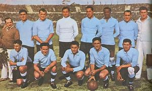

Click aqui para volver al inicio
7.Mundial de fútbol
El mundial de fútbol se funfa en 1930 teniendo como sede Uruguay saliendo posteriormente com vencedora del torneo

Brasil es la selección que en más ocasiones a salido como ganador del torneo con un total de 5 veces
En cuanto al resto de gandores tenemos:
| Selección |
Nº de mundiales |
Año/s |
| Italia |
4 Mundiales |
1934/1938/1982/2006 |
| Alemania |
4 Mundiales |
1954/1974/1990/2014 |
| Argentina |
3 Mundiales |
1978/1986/2022 |
| Uruguay |
2 Mundiales |
1930/195006 |
| Francia |
2 Mundiales |
1998/2018 |
| Inglaterra |
1 Mundial |
1966 |
| España |
1 Mundial |
2010 |
El máximo goleador es Klose con un total de 16 goles